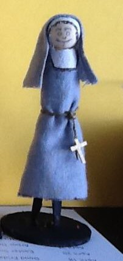

Sunday, February the 16th, 2014
back to: title, date or indexes
I want one of these. A toy nun fashioned from a clothespeg by the elderly father of Gregory Vincent St Thomasino, Brooklyn poet and Jubilate Agno enthusiast.
